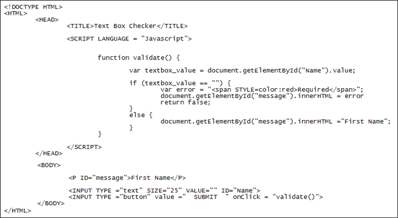

Variable Scope
Variables have something called scope. This is do with where variables can be seen from. Variables declared with the var keyword inside of functions cannot be seen from outside of that function. Examine this code:
function myFunction() {
var alertString = "ALERT!!!";
secondFunction();
}
function secondFunction() {
alert( alertString );
}
The first function has a variable set up inside of its curly brackets called alertString. It is set up with the var keyword. The second function is trying to access this variable in an alert box. However, the code doesn't work, and you get an error message saying "alertString is not defined". It doesn't work because the variable alertString is local to myFunction (it's inside of this function's curly brackets and has been set up with the var keyword). So the second function can't see inside of this variable.
To remedy this, you can make variables global in scope. All this entails is declaring them outside of any functions. Like this:
var alertString = "ALERT!";
function myFunction() {
secondFunction();
}
function secondFunction() {
alert( alertString );
}
With the variable declared outside of the two functions, at the top, the code will now work. (You can also miss out the word var keyword from inside a function to turn the variable into a global one.)
However, scope in the Javascript language can be quite complex, especially when you take into account things called closure and prototypes. So we won't cover it any further in this beginners book. Just remember to take care when declaring variables inside of functions - they can't be seen outside of that function if you declare them with the var keyword.
To end this section, let's have a look at some code that uses functions in a real setting. The HTML in the BODY section below sets up a text box and a button. (We've missed out FORM tags just to keep things simple. But you'll learn about Javascript and FORMS in a later chapter.) We want users to fill in this box. If it's empty when the button is clicked we'll display an error message just above the text box. Here's the code:

The BODY of the HTML has this code:
<P ID="message">First Name</P>
<INPUT TYPE ="text" SIZE="25" VALUE="" ID="Name">
<INPUT TYPE ="button" value =" SUBMIT " onClick = "validate()">
The first line is just two paragraph tags with the text "First Name" between them. The P tag also has an ID. We'll use this ID in our Javascript.
The next two lines are the tags for a text box and a button. The Text box also has an ID. When the button is clicked, it calls the validate function between the two SCRIPT tags in the HEAD section:
onClick = "validate()"
The first line of code for the validate function is this:
var textbox_value = document.getElementById("Name").value;
We're setting up a variable called textbox_value here. Into this variable we want to store the value from the text box. This is done via the getElementById property of the document object (you'll learn about getElementById in later section). Between its round brackets we have the ID from the text box. After a dot, we have value. This is enough to get the VALUE attribute from the text box.
We want to test what's in this text box so have set up an IF … ELSE statement. The IF part is this:
if (textbox_value == "") {
var error = "<span STYLE=color:red>Required</span>";
document.getElementById("message").innerHTML = error;
}
The variable called error just stores some HTML and CSS:
"<span STYLE=color:red>Required</span>";
This is a SPAN tag with a style applied. It will cause the test "Required" to be coloured red. Next is this line:
document.getElementById("message").innerHTML = error;
This is setting some text in the HTML. That paragraph tag we set up had an ID of message. We can use this with document.getElementById. Notice the innerHTML part after the dot. This allows you to set text in your HTML. The inner HTML is the parts between the two P tags:
<P ID="message">First Name</P>
The inner HTML is "First Name". This will be erased and replaced with the new text. The new text goes after an equal sign. For us, this is whatever is in the variable called error.
The else statement sets the innerHTML back to "First Name". We don't really need this, but it's there for testing purposes.
The return false line is also not needed in this simple piece of code. But in reality, you'd add it if you were going to send your form data somewhere. Adding return false cancels the sending so that the user can try again.
Exercise
Try the code out for yourself. Typing it all out will give you some good practice
of setting up HTML and Javascript. When you click your button, you should see
the new text appear in red. Type some text in the text box and click the button
again. The First Name text should reappear.
There's a lot more to functions, however. For example, you can create things like function expressions (also known as an anonymous function) and self invoking functions. This is intermediate to advanced stuff, however. As a beginner, it's going to be easier to stick with the simple function declarations that we've outlined in this section. For a more detailed discussion on functions, see the following pages:
http://javascript.info/tutorial/functions-declarations-and-expressions#function-expression
http://kangax.github.com/nfe/
In the next section, we'll take a look at Javascript and Strings.